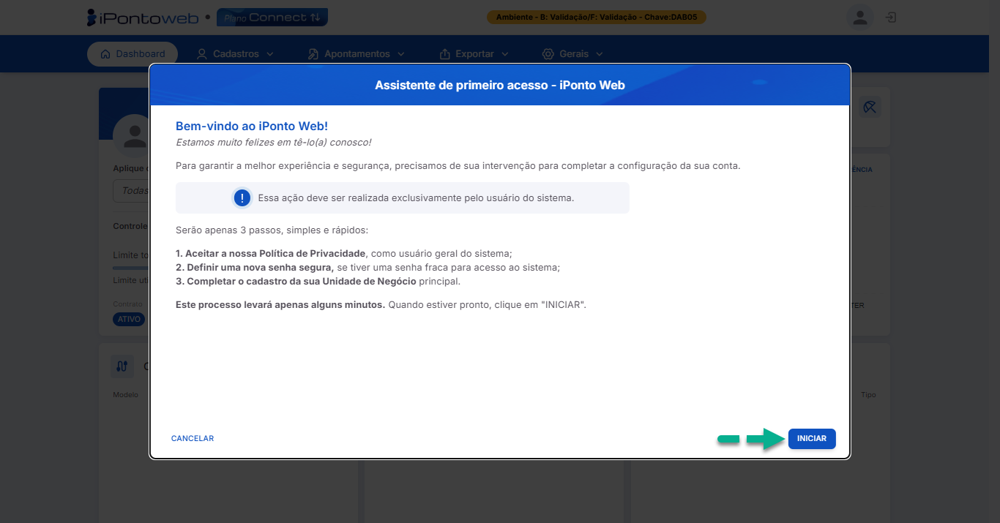
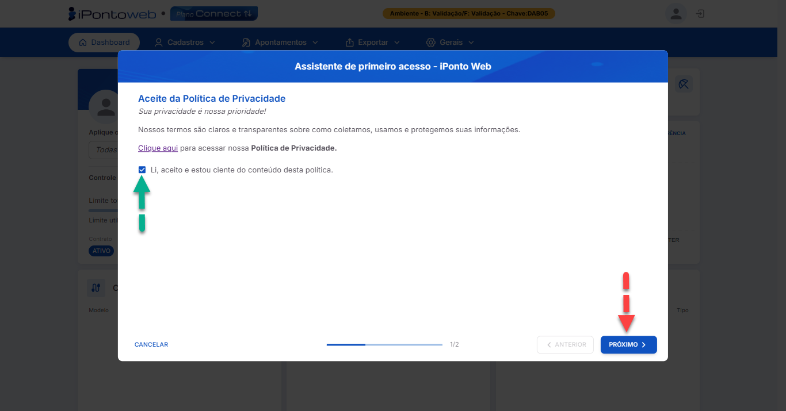
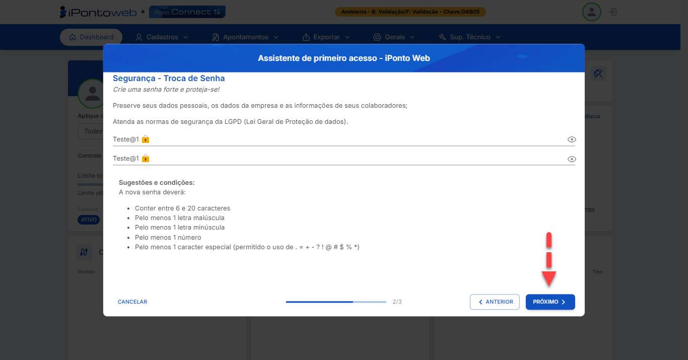
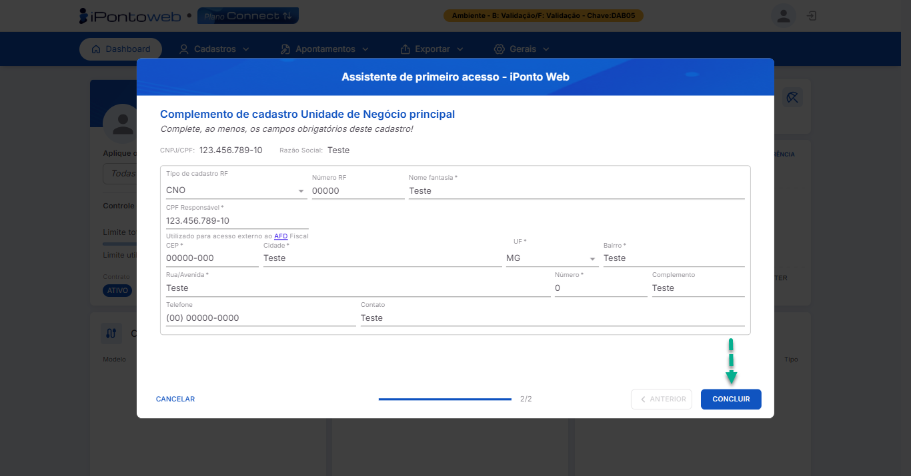

Registro na Plataforma
Aplicação
Através desse processo, o usuário realiza o registro da sua conta no iPonto Web, utilizando os dados de acesso recebidos através do e-mail de boas-vindas enviado pela nossa plataforma, e tem acesso às principais funcionalidades oferecidas pelo sistema.
Requisitos
Para se registrar no sistema, é necessário ter:
- Um contrato do iPonto Web ativo.
- A Chave de Acesso, o CNPJ / CPF e o E-mail recebidos na mensagem de boas-vindas.
Execução
- Acesse o link oficial de cadastro no iPonto Web Clicando Aqui.
Interface de Acesso ao Sistema - Tela de Registro
{kind=link}
- No formulário de registro, insira as informações solicitadas (Chave de Acesso, CPF/CNPJ e E-mail) conforme constam nos dados recebidos por e-mail. Para a senha, lembre-se de escolher uma senha segura, de sua preferência. Com os campos preenchidos, clique no botão "Confirmar e Acessar" para continuar com o processo de registro.
Interface de Acesso ao Sistema - Tela de Registro Com Dados Preenchidos
{kind=link}
Atenção:
Para garantir que você escolha uma senha segura, recomendamos que ela tenha entre 6 e 20 caracteres, pelo menos 1 letra maiúscula, 1 letra minúscula, 1 número e 1 caracter especial (permitido o uso de . = + - ? ! @ # $ % *).:
- Após clicar em "Confirmar e Acessar", o sistema processará suas informações. Uma vez concluído com sucesso, você será redirecionado automaticamente para a tela de boas-vindas do sistema, que mostrará um resumo dos próximos passos do assistente de primeiro acesso. Para continuar com o processo de registro, clique no botão "Iniciar"

Assitente de Primeiro Acesso - Tela de Boas Vindas
{kind=link}
- Nessa tela, leia o conteúdo da nossa política, para entender e compreender como iremos manipular com segurança os seus dados e informações. Em seguida, marque o checkbox da opção "Li, aceito e estou ciente do conteúdo desta política", para aceitar os nossos termos, e clique no botão "Próximo" para prosseguir com o processo de registro.

Assitente de Primeiro Acesso - Tela de Aceite da Política de Privacidade
{kind=link}
- Caso a senha definida no momento do cadastro não seja segura o suficiente, o sistema exibirá uma página solicitando a criação de uma nova senha para proteger suas informações.
Crie uma nova senha seguindo as orientações de segurança fornecidas na tela e então clique no botão "Próximo" para prosseguir para a última etapa do processo de regsitro.

Assitente de Primeiro Acesso - Tela de Troca de Senha
{kind=link}
- Insira no formulário exibido na tela os dados referentes à Unidade de Negócio Principal que será utilizada no sistema,, se atentando aos campos obrigatórios.
Por fim, clique no botão "Concluir", e o sistema te redicionará automaticamente para o Painel Inicial da Plataforma (Dashboard), finalizando assim, o seu processo de registro.

Assitente de Primeiro Acesso - Tela de Cadastro da UN
{kind=link}
Informações
- Caso você decida interromper o processo de registro durante o assistente de primeiro acesso, não se preocupe, você pode retomá-lo a qualquer momento, logando novamente no sistema.
- Caso você encontre algum problema durante o processo, não hesite em buscar ajuda com a nossa equipe de suporte!